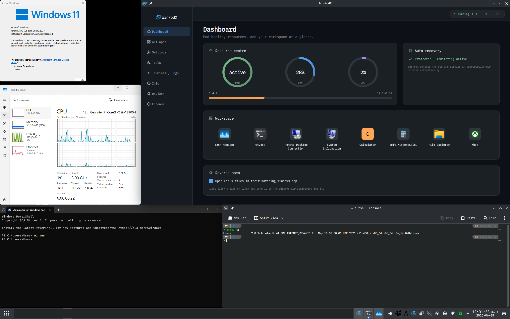

Click an app.
Word opens. That's it.
Native Linux windows for every Windows app — real icons, real
WM_CLASS, pin-to-taskbar. FreeRDP RemoteApp + dockur/windows.
Zero config.
{kind=link}

How it works
No manual VM wrangling. winpodx provisions everything on the first app click.
Install & setup
One command pulls a Windows container (dockur/windows) in rootless Podman, runs an unattended Windows install, and applies the RemoteApp + agent setup.
Apps auto-discovered
First boot scans the guest — Registry App Paths, Start Menu, UWP/MSIX, Chocolatey, Scoop — and registers every app with its real icon as a Linux .desktop entry.
Click & launch
Click the app like any native one. It opens in its own Linux window via FreeRDP RemoteApp — pinnable, alt-tabbable, file-associated. No full desktop.
Why not just RDP, a VM, or Wine?
winpodx keeps real Windows compatibility while feeling native.
| winpodx | Full-screen RDP | Bare VM | Wine | |
|---|---|---|---|---|
| Per-app native windows | ✓ | desktop only | desktop only | ✓ |
| Real Windows compatibility | ✓ | ✓ | ✓ | partial |
| Taskbar icons + file assoc. | ✓ | ✕ | ✕ | limited |
| One-command setup | ✓ | manual | manual | per-app |
| Linux apps in Windows menu | ✓ | ✕ | ✕ | ✕ |
What it does
Each Windows app becomes its own Linux window — pinnable, alt-tabbable, file-associated, both directions.
Seamless app windows
- RemoteApp (RAIL) renders each app as a native window — no desktop
- Per-app taskbar icons via
WM_CLASSmatching - Double-click
.docx→ Word opens - Multi-session RDP: up to 10 independent sessions
Reverse-open
- Linux apps appear in the Windows "Open with…" menu, by default
- Correct per-app icons in both Windows chooser dialogs
- Round-trips the file open back to host
xdg-open - Auto-discovers host apps + MIME from freedesktop standards
Zero-config launch
- First click auto-provisions config, container, desktop entries
- First-boot discovery registers every app with its real icon
- Registry App Paths, Start Menu, UWP/MSIX, Chocolatey, Scoop
- Backends: Podman (default), Docker, libvirt/KVM, manual RDP
Peripherals & sharing
- Clipboard (text + images), sound, printers — on by default
- Home directory shared as
\\tsclient\home - USB drives auto-mapped; live USB device passthrough
- Smart DPI scaling auto-detected from your desktop
Automation & resilience
- Auto suspend / resume; optional pod auto-start on login
- Self-heals a stalled RDP guest (UNRESPONSIVE → recover)
- Password auto-rotation; Windows disk auto-grow
- Health checks + auto-fix via
winpodx doctor --fix
Lean & private
- Near-zero Python deps — stdlib only on 3.11+
- No telemetry, ever
- Multilingual UI (en / ko / zh / ja / de / fr / it)
- Qt6 GUI + a lightweight system tray
Works on
One-line install across the major Linux families.